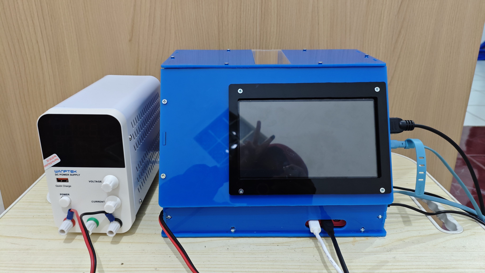

SEMINAR PROPOSAL TUGAS AKHIR
Rancang Bangun Instrumentasi Sensor Tunneling Magnetoresistance Berbasis Nanofiber Fe3O4/PVA-Sitrat-ADH untuk Deteksi Formalin pada Bakso Menggunakan Komparasi Model SVM dan QSVC
Kajian Eksperimental Sensor TMR ALT023-10E, Fungsionalisasi Nanomaterial Magnetik, dan Pembelajaran Mesin Kuantum
Spintronika Kuantum
Prinsip Fisika Magnetic Tunnel Junction
- Fenomena TMR: Terjadi pada persambungan MTJ di mana arus elektron tunneling menembus isolator tipis dipengaruhi orientasi magnetisasi dua lapisan feromagnetik.
- Model Julliere (1975): TMR = (RAP - RP) / RP = 2·P1·P2 / (1 - P1·P2), di mana P1 dan P2 adalah polarisasi spin kedua elektroda.
- Karakteristik ALT023-10E: Memiliki 4 elemen MTJ konfigurasi jembatan Wheatstone penuh, resistansi ~20 kΩ, linier pada rentang ±1.0 mT dengan sensitivitas 11–18 mV/V/mT.
- Kompensasi Termal: Arsitektur jembatan penuh meminimalkan hanyutan suhu (thermal drift) saat pengukuran.

Gambar 2.1: Struktur Lapisan MTJ dan Orientasi Spin Feromagnetik

Gambar 2.2: Sensor TMR ALT023-10E (Kemasan SOIC-8 NVE Corp.)
Penguat & Konverter Analog
Spesifikasi Rantai Sinyal Elektrik
- In-Amp AD623: Penguat instrumentasi rail-to-rail beroperasi pada single supply +5.0 V dengan CMRR tinggi (> 90 dB).
- Penguatan (Gain): G = 1 + (100 kΩ / RG). Nilai RG disesuaikan untuk menghasilkan penguatan optimal 50x–100x.
- Tegangan Referensi VREF = 2.50 V: Pin 5 (REF) dihubungkan ke pembagi tegangan resistor presisi R3=R4=1.0 kΩ sehingga Vout(B=0) ≈ 2.50 V.
- ADC ADS1115 16-Bit: Komunikasi I2C 100 kHz, GAIN_TWOTHIRDS (FSR ±6.144 V), resolusi 0.1875 mV/count pada mode diferensial A0-A1.

Gambar 2.3: Diagram Pinout IC Penguat Instrumentasi AD623

Gambar 2.4: Modul Konverter Analog-ke-Digital ADS1115 16-Bit
Struktur Kerja Riset
5 Tahapan Utama Penelitian
- Tahap 1 (Persiapan & Desain): Studi literatur, perancangan skematik PCB AD623/ADS1115, dan pemodelan statif 3D kumparan Helmholtz.
- Tahap 2 (Sintesis Nanofiber): Sol-gel PVA/Fe3O4/Sitrat, electrospinning tegangan tinggi 15 kV, dan fungsionalisasi reseptor ADH.
- Tahap 3 (Hardware & Software): Fabrikasi PCB rantai sinyal presisi, firmware Arduino, dan GUI Python visualisasi 3D.
- Tahap 4 (Karakterisasi & Sampel): Kalibrasi Helmholtz, pengujian sensitivitas TMR, dan pengujian analit bakso spiking formalin 0–1000 ppm.
- Tahap 5 (Machine Learning): Ekstraksi 5 fitur sinyal, pelatihan SVM vs QSVC, evaluasi metrik validasi, dan integrasi GUI.

Gambar 3.1: Diagram Alir Komprehensif Penelitian
Arsitektur Perangkat Keras
Integrasi Rantai Sinyal Elektrik
- Sensor TMR ALT023-10E: Dicatu tegangan +5.0 V dengan kapasitor decoupling 100 nF untuk meredam noise switching catu daya.
- In-Amp AD623 & VREF = 2.50 V: Tegangan diferensial TMR diperkuat dengan gain RG. Pin REF dihubungkan ke pembagi presisi 1.0 kΩ sehingga Vout berpusat di 2.50 V.
- ADC ADS1115 & Bus I2C: Membaca sinyal penguat secara diferensial dan mentransmisikan data digital ke Arduino pada 100 kHz.
- Statif Non-Magnetik 3D: Dicetak menggunakan filament PLA non-magnetik untuk memposisikan sensor tepat di sumbu tengah medan seragam kumparan Helmholtz.

Gambar 3.2: Skematik PCB Rantai Sinyal TMR, AD623 & ADS1115

Gambar 3.3: Desain 3D Casing & Statif Posisi Sensor TMR
Firmware & GUI Analisis
Spesifikasi Perangkat Lunak
- Firmware Arduino: Mengonfigurasi ADS1115 mode diferensial, menerapkan filter moving average N=10, dan mentransmisikan data serial 115200 baud.
- Engine Akuisisi Berbasis Durasi: Menggunakan durasi waktu terukur ('Lama Detik', default 5.0 s) dengan eliminasi waktu transien awal (settling time 1.0 s).
- Visualisasi OriginLab 3D Scatter: Rendering grafik kurva respons kalibrasi dan pengujian analit bergaya bola 3D OriginLab beresolusi 300 DPI.
- Auto-Save Laporan Komprehensif: Otomasi ekspor data ke format spreadsheet multi-sheet Excel (.xlsx) dan metadata konstanta regresi JSON.

Gambar 3.4: Arduino

Gambar 3.5: GUI Python
Sintesis & Fungsionalisasi
Prosedur Fabrikasi Nanomaterial
- Preparasi Larutan Sol-Gel: PVA 10% wt dilarutkan dalam akuades pada 80°C selama 2 jam. Nanopartikel Fe3O4 3% wt dan asam sitrat 5% wt didispersikan via sonikasi 30 menit.
- Parameter Operasi Electrospinning: Tegangan tinggi: +15 kV DC; Jarak jarum ke kolektor: 12 cm; Laju alir pompa syringe: 0.5 mL/jam.
- Pematangan Crosslinking: Membran nanofiber dipanaskan pada 120°C selama 1 jam untuk menyempurnakan esterifikasi asam sitrat.
- Imobilisasi Reseptor ADH: Membran direndam dalam larutan Adipic Dihydrazide dengan aktivator EDC/NHS agar gugus hidrazida tertambat kokoh pada serat.

Gambar 3.6: Diagram Alir Sintesis & Fungsionalisasi Nanofiber
Klasik vs Kuantum
Pipeline Pelatihan & Evaluasi Model
- Prapemrosesan Data: Standarisasi skala data menggunakan StandardScaler (mean=0, std=1) untuk menjaga netralitas kontribusi fitur.
- Pembagian Dataset: 80% data latih (training set) dan 20% data uji (test set) dengan skema 5-Fold Stratified Cross Validation.
- Pelatihan SVM Klasik: Kernel RBF dioptimasi melalui GridSearchCV untuk menentukan parameter C dan gamma terbaik.
- Pelatihan QSVC Kuantum: Sirkuit ZZFeatureMap 4-qubit pada Qiskit Aer untuk komputasi matriks quantum kernel.
- Metrik Evaluasi: Komparasi menyeluruh mencakup Akurasi, Presisi, Recall, F1-Score, kurva ROC-AUC, dan waktu inferensi.

Gambar 3.7: Diagram Alir Pelatihan & Evaluasi Model SVM vs QSVC
Desktop GUI Deployment
Arsitektur Integrasi Sistem Cerdas
- Serialisasi Model Terlatih: Model klasifikasi terbaik diekspor ke berkas biner (joblib / qpy) untuk diakses langsung oleh GUI Python.
- Pipeline Inferensi Real-Time: Saat pengujian sampel selesai (5.0 detik), GUI mengekstrak 5 fitur secara otomatis dan memasukkannya ke model.
- Indikator Visual Cepat: Tampilan status instan pada layar: 'SAMPEL AMAN (Bebas Formalin)' atau 'TERKONTAMINASI FORMALIN (Estimasi X ppm)'.
- Penyimpanan Data Terpusat: Semua riwayat pengujian, nilai fitur, dan grafik respons tersimpan otomatis ke berkas Excel dan database lokal.

Gambar 3.8: Alur Deployment Model

Gambar 3.9: Fisik Prototipe Alat